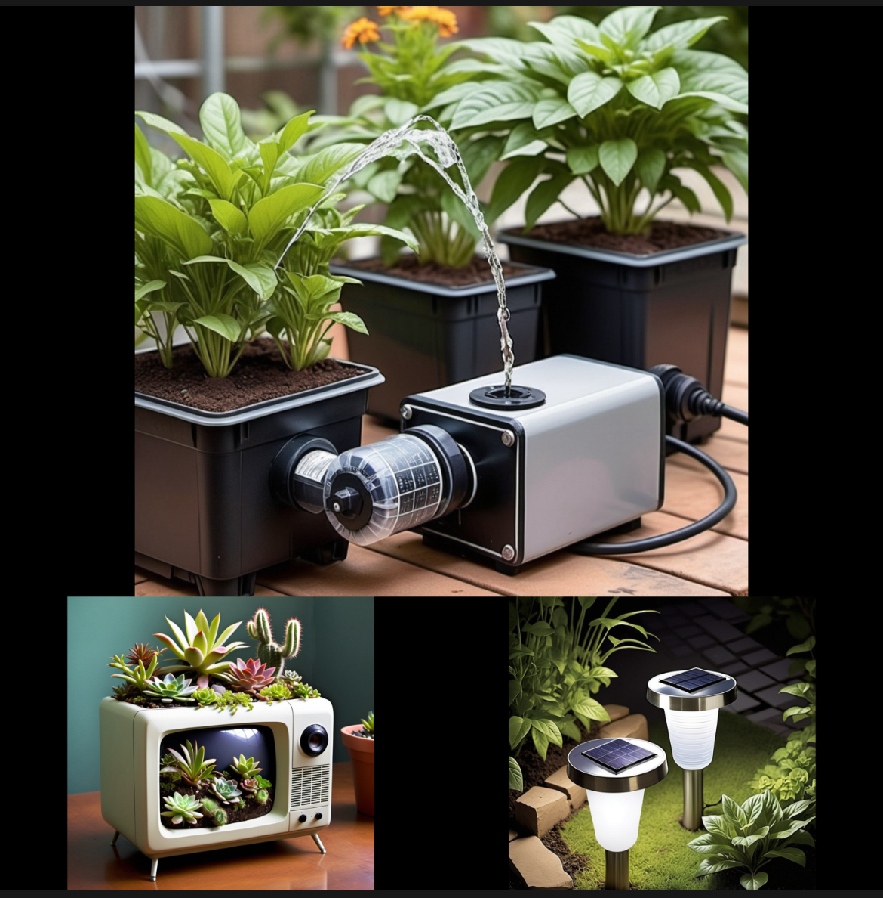
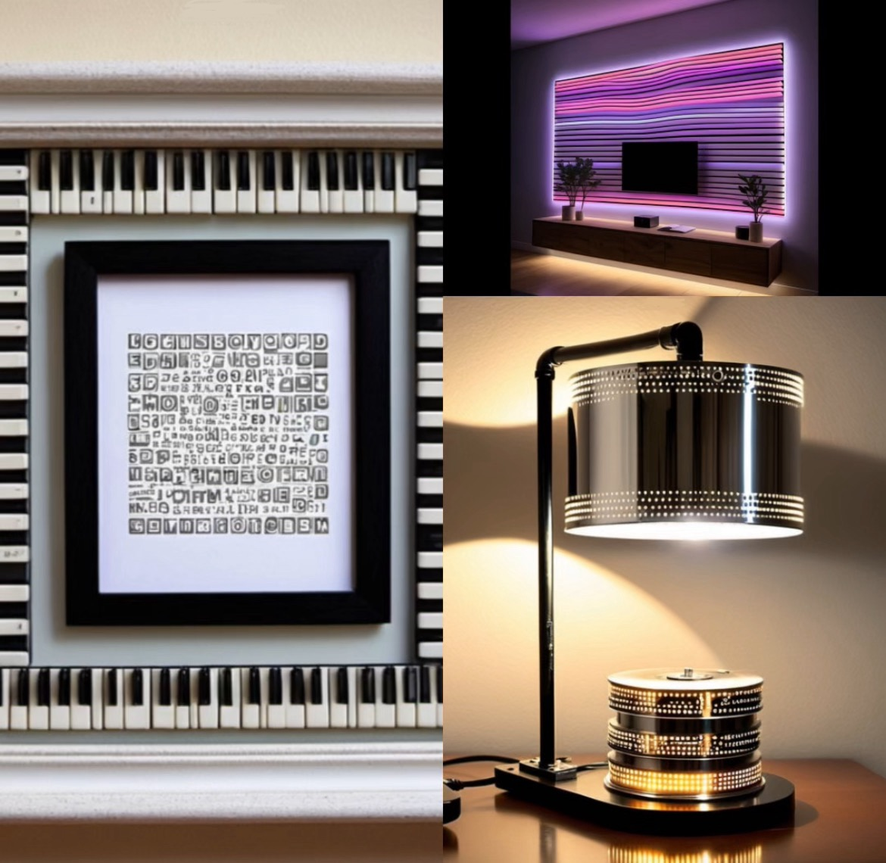

Second Spark
How to reuse electronics?
Reusing electronics and creating new products from unused devices not only helps reduce waste but also fosters creativity and innovation. Here are some examples that illustrate how old electronics can be repurposed into functional and decorative items:
Decor from Old Electronics
- Circuit Board Art: The intricate designs of old circuit boards and microchips can be transformed into striking wall art. By arranging them in frames and adding metallic paints, you create a modern and tech-inspired decoration.
- Hard Drive Disk Lamps: The reflective metal disks from old hard drives can serve as unique bases for desk lamps or chandeliers, adding an industrial touch to your space.
- Monitor Terrarium: An old monitor or TV can be repurposed as a mini-garden, perfect for displaying succulents or cacti. This creative use transforms outdated technology into a lively centerpiece.
-
Keyboard Key Picture Frames: Repurposing old keyboard keys to embellish picture frames allows you to personalize your decor with words or patterns, turning memories into an art piece.

Garden and Garden Appliances
Solar Garden Lamps: Small solar panels and batteries from old devices can be used to build lamps that illuminate your garden at night without needing to be plugged in, promoting eco-friendly lighting solutions.
Mini Greenhouse Heater: Old computer fans equipped with resistors can help maintain warmth in small greenhouses, ensuring that plants are protected from cold temperatures.
Auto-Watering Plants: Pumps from old electronics can be utilized to create an automatic irrigation system for your garden. By connecting it to a timer, you ensure your plants receive consistent moisture.
Upcycled Gadgets for Home Enhancement
- Upcycled Smart Mirror: An old tablet can be transformed into a smart mirror that displays useful information like the time and weather. Placing the tablet behind a two-way mirror combines functionality with style.
- Repurposed Old Phone as Home Security Camera: An unused smartphone can be turned into a home security camera by installing monitoring apps, allowing you to keep an eye on your home remotely.
- Customisable LED Wall Art: LED strips salvaged from old electronics can be fashioned into wall art that changes colors and patterns, offering a dynamic and personalized aesthetic for your space.
These examples highlight the potential for creativity in reusing electronics, demonstrating that we can give new life to old devices while making functional and stylish additions to our homes and gardens.
